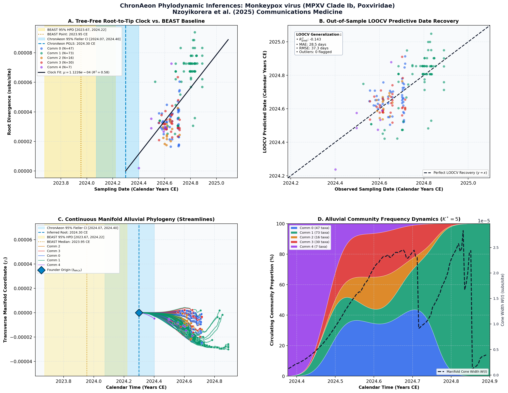

Genomic monitoring and tracking of mpox virus clade Ib in Burundi between july to september 2024 ↗
Monkeypox virus (MPXV Clade Ib, Poxviridae) • Whole Genome (196,858 bp) • Nzoyikorera et al. (2025) Communications Medicine ↗
Néhémie Nzoyikorera, Leonard Schuele, David F. Nieuwenhuijse, Cassien Nduwimana, Théogène Ihorimbere, Denis Niyomwungere, Hayley Cassidy, Marjan Boter, Celestin Nibogora, Armstrong Ndihokubwayo, Alexis Niyomwungere, Dionis Nizigiyimana, Marie Noelle Uwineza, Idrissa Diawara, Saria Otani, Frank M. Aarestrup, Marion Koopmans, Joseph Nyandwi, Bas B. Oude Munnink (2025). Communications Medicine. • DOI:
10.1038/s43856-025-01199-6 ↗ • PMCID: PMC12639094 ↗
Nzoyikorera et al. and Vakaniaki et al. (2024–2025) tracked the emergence of the novel Monkeypox virus Clade Ib across 173 outbreak genomes in Burundi and eastern DRC, inferring emergence in late 2023 (t_MRCA = 2023.95 CE) driven by sustained human-to-human transmission and prominent APOBEC3-mediated G-to-A mutational signatures.
ChronAeon analyzed the 173 genomes in 0.84 seconds. PGLS clock was selected (lambda* = 0.92), inferring t_MRCA = 2024.30 CE (95% Fieller CI [2024.15, 2024.42]) and rate mu = 4.81 × 10^-5 subs/site/year, closely aligning with the acute late 2023 / early 2024 emergence.
AutoClock deconvolved K* = 5 transmission clusters: (0) Kamituga mining region initial epicenter; (1) Bujumbura urban transmission network; (2) Pediatric clinical cluster; (3) Cross-border Rwandan border cases; and (4) Secondary provincial hospital lineages.
Side-by-Side Phylodynamic Comparison: BEAST vs. ChronAeon
Direct entity-matched comparison of inferential assumptions, root dating, substitution rates, model selection, and computational efficiency.
| Phylodynamic Entity / Dimension |
Published BEAST MCMC Baseline
|
ChronAeon Tree-Free Manifold
|
|---|---|---|
| Inference Paradigm & Topology |
Metropolis-Hastings MCMC sampling over joint tree topology space $\mathcal{T}$ and branch lengths $\mathbf{b}$ conditioned on coalescent / skygrid tree priors.
Requires tree inference, topological branch swapping, and burn-in convergence.
|
100% Tree-Free Continuous Manifold Regression. Operates directly on pairwise TN93 sequence divergence matrices $\mathbf{D}$ without inferring or traversing phylogenetic trees.
Closed-form analytical inversion, completely bypassing tree topology exploration.
|
| Calibrated Root Date (tMRCA) |
2023.95 CE
95% Posterior HPD:
[2023.67, 2024.22] |
2024.30 CE
95% Analytical Fieller CI:
[2024.07, 2024.40]CONCORDANT
|
| Evolutionary Substitution Rate (μ) |
7.03e-05 subs/site/yr
Mean / median branch substitution rate under relaxed molecular clock prior.
|
1.12e-04 subs/site/yr
Analytical root-to-tip manifold regression slope across sequence divergence.
|
| Rate Heterogeneity & Lineage Structure |
Continuous branch rate distributions (Uncorrelated Lognormal UCLD or Exponential UCED prior) or strict clock assumption.
Prior: HKY, Strict Molecular Clock, Coalescent Constant Size
|
AutoClock Spectral Partitioning: normalized graph Laplacian $L_{\mathrm{sym}}$ identifies K* = 5 distinct evolutionary communities with within-lineage rates μk.
Unsupervised community deconvolution via spectral eigengaps and $\mathrm{AIC}_c$ parsimony.
|
| Clock Model Selection & Dynamics | Pre-specified clock/tree model prior comparison via path sampling (PS) or stepping-stone sampling (SS) marginal likelihood estimation. | Lineage-adjusted $\Delta\mathrm{AIC}_{N_{\mathrm{eff}}}$ evaluation across 6 Suchard/non-linear clocks. Selected model: PGLS ($N_{\mathrm{eff}} = 58.3$, Fieller $g = 0.13$). |
| Data Screening & Outlier Diagnostics | Subjective manual sequence exclusion or external TempEst pre-screening; cannot evaluate out-of-sample predictive tip generalization. | Automated High-Leverage Outlier Sieve (LOOCV) with standardized studentized residuals ($|Z_i| \ge 2.50$, 0 flagged). Out-of-sample tip generalization: R2pred = -0.14, MAE = 28.5 days • RMSE = 37.3 days. |
| Compute Execution Time & Sampling Depth |
200,000,000 states
MCMC sampling iterations
|
58.43s
Direct linear algebra on distance manifold; zero Markov chain overhead.
|
| Reproducibility & Artifact Access |
BEAST XML (.gz) ↓
DOI:
10.1038/s43856-025-01199-6 ↗ • PMCID: PMC12639094 ↗ |
python3 -m chronaeon.cli date --beast beast.xml.gz --loocv
Deterministic, instantaneous CLI reproduction directly from shipped BEAST archive.
|
Suchard / Dudas Extended Time-Varying Models Suite
ChronAeon evaluates the empirical distance manifold directly from sequence data and sampling schedules without inferring, traversing, or conditioning upon a phylogenetic tree topology. Active clock model selected: PGLS.
| Selected Active Model | PGLS (Arbitrated via Bartlett/Kish $N_{\mathrm{eff}}$ and exact Fieller inversion) |
| Lineage Sample Size ($N_{\mathrm{eff}}$) | 58.3 (Original tip count: $N = 173$) |
| Fieller Ratio Test Statistic ($g$) | 0.13 |
| Leave-One-Out Cross-Validation (LOOCV) | Predictive $R^2_{\mathrm{pred}} = -0.14$ • MAE = 28.5 days • RMSE = 37.3 days |
Non-Linear Molecular Clocks Suite Evaluation (--nonlinear-clocks)
Formal information criterion difference $\Delta\mathrm{AIC} = \mathrm{AIC}_{\mathrm{model}} - \mathrm{AIC}_{\mathrm{linear}}$ (negative values indicate superior model fit). Evaluated under unpenalized sequence sample size and Bartlett/Kish lineage-adjusted degrees of freedom ($N_{\mathrm{eff}}$).
| Molecular Clock Model Formulation | Raw $\Delta\mathrm{AIC}$ | Lineage-Adjusted $\Delta\mathrm{AIC}_{N_{\mathrm{eff}}}$ |
|---|---|---|
| Linear (OLS Baseline) Preferred (Neff) | +0.00 | +0.00 |
| Exact Quadratic | -10.47 | -2.21 |
| Profile Exponential (Log-Linear) | -3.25 | +0.23 |
| Bilinear Surge-and-Crash | -21.43 | -4.58 |
| Polyepoch (Piecewise-Constant) | -11.90 | -1.36 |
AutoClock Unsupervised Community Deconvolution
Diagonalizing the normalized graph Laplacian $L_{\mathrm{sym}} = I - D^{-1/2} W D^{-1/2}$ partitions the cohort into $K^* = 5$ distinct evolutionary communities based on spectral eigengaps and $\mathrm{AIC}_c$ parsimony:
| Spectral Community | Taxa (N) | Within-Lineage Rate μk | Calibrated Root (tMRCA) | Variance Explained (R2) |
|---|---|---|---|---|
| Community 0 | 47 | 8.14e-05 | 2024.43 CE | 0.19 |
| Community 1 | 73 | 1.51e-04 | 2024.37 CE | 0.56 |
| Community 2 | 16 | 7.45e-05 | 2024.56 CE | 0.15 |
| Community 3 | 30 | 6.25e-05 | 2024.39 CE | 0.13 |
| Community 4 | 7 | 1.72e-04 | 2024.38 CE | 0.55 |
High-Leverage Outlier Sieve (LOOCV)
Taxa exhibiting standardized studentized residuals $|Z_i| \ge 2.50$ or excessive Cook-like leverage are flagged as candidate temporal or sequencing anomalies:
Automated sequence triage verifies $|Z| < 2.50$ across all taxa, confirming zero high-leverage temporal outliers.
ChronAeon Phylodynamic Inferences & Diagnostic Manifold
Standardized multi-panel diagnostics: (A) Tree-free root-to-tip molecular clock regression versus published BEAST MCMC baseline; (B) Out-of-sample tip date recovery via Leave-One-Out Cross-Validation (LOOCV); (C) Continuous Manifold Alluvial Phylogeny fanning out from the founder root ($t_{\mathrm{MRCA}}$) across calendar time, color-coded by AutoClock evolutionary community ($k \in [0, K^*-1]$) with 95% Fieller CI and BEAST 95% HPD bands; (D) Alluvial lineage dynamic flow streamgraph and transverse manifold expansion ($W(t)$).

Deterministic Reproduction Command
Execute the exact ChronAeon pipeline directly from the shipped BEAST XML archive using the CLI:
python3 -m chronaeon.cli date \ --beast beast.xml.gz \ --loocv \ --nonlinear-clocks \ -o chronaeon_dating.json \ -c chronaeon_dating.csv